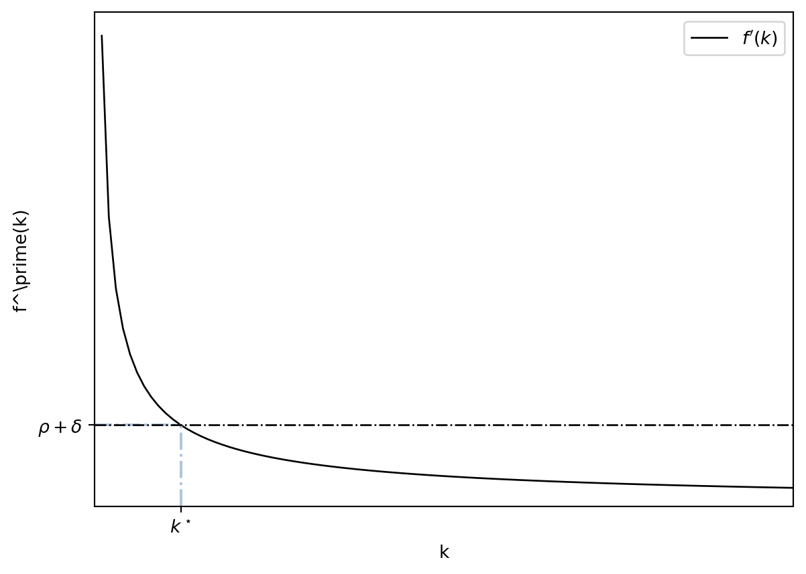
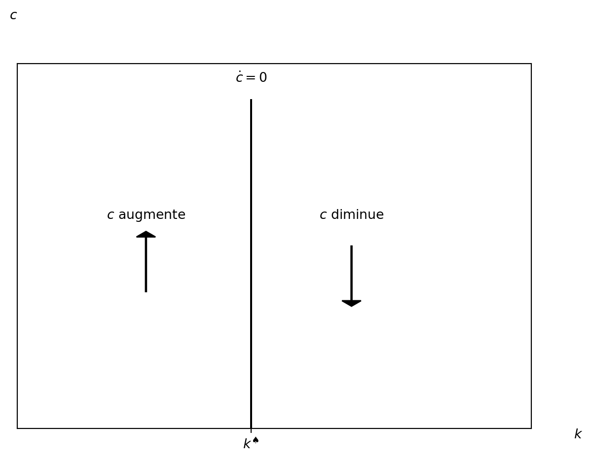
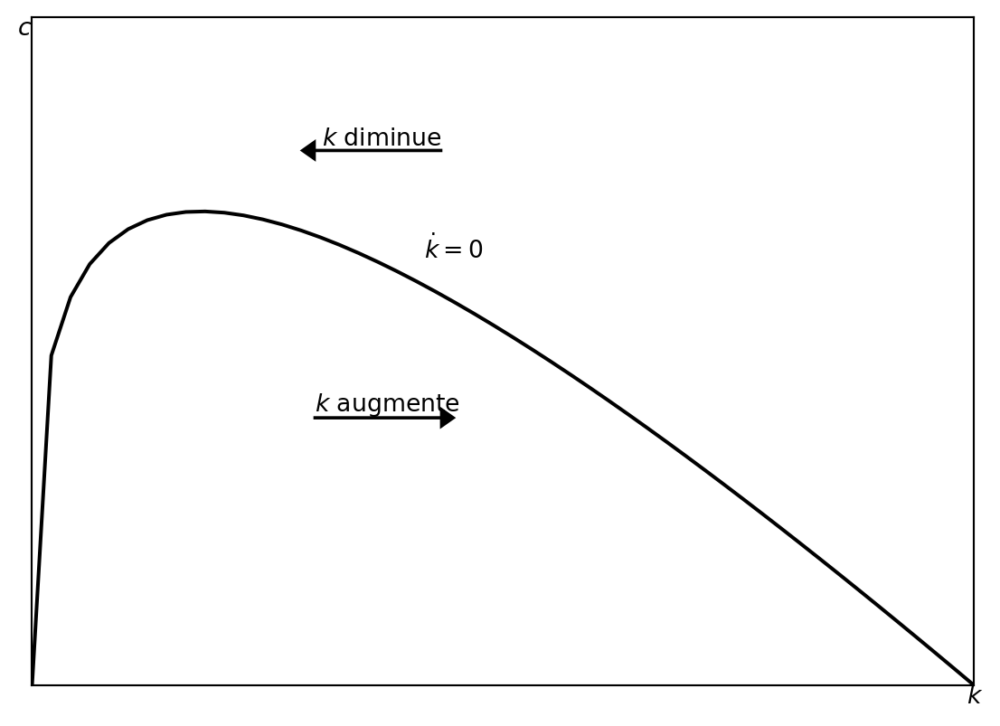
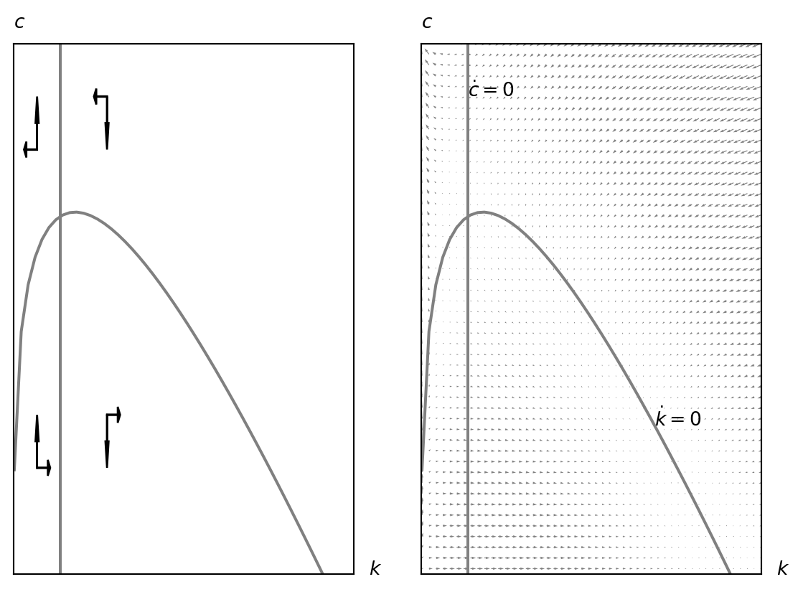
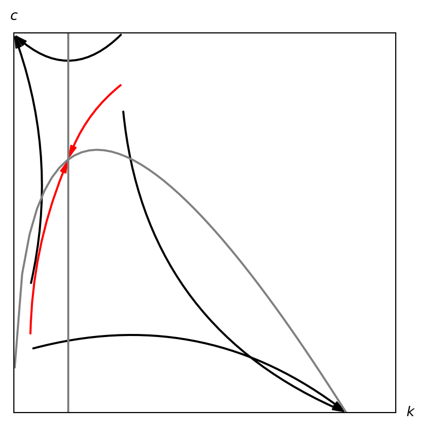

4 Le modèle de Ramsey
Le modèle de Ramsey, un modèle de croissance néoclassique, a été élaboré par Frank Ramsey en 1928. Bien qu’il partage des similitudes avec le modèle de Solow, il présente plusieurs différences majeures.
- Dans le modèle de Ramsey, l’épargne est endogénéisée. En d’autres termes, il explique comment les agents économiques déterminent leur taux d’épargne. Par opposition, le modèle de Solow considère l’épargne comme exogène, c’est-à-dire qu’elle est définie par les équations du modèle. Le modèle de Ramsey démontre que le taux d’épargne optimal est influencé par divers facteurs, tels que le taux de croissance de la population, le taux de rendement du capital et le coefficient d’aversion au risque des agents économiques.
- Le modèle de Ramsey intègre l’intertemporalité, signifiant que les agents économiques prennent en compte les conséquences futures de leurs décisions actuelles. À l’inverse, le modèle de Solow suppose que les agents économiques ne considèrent pas ces implications futures.
- Enfin, le modèle de Ramsey est axé sur l’optimisation, cherchant à maximiser le bien-être des agents économiques sur toute la période. Le modèle de Solow, en revanche, ne s’engage pas dans cette maximisation du bien-être.
Le modèle de Ramsey montre que le taux d’épargne optimal est déterminé par un certain nombre de facteurs, tels que le taux de croissance de la population, le taux de rendement du capital et le coefficient d’aversion au risque des agents économiques. Cependant, le modèle de Solow ne prend pas en compte ces facteurs. L’endogénéisation de l’épargne dans le modèle de Ramsey le rend plus réaliste que le modèle de Solow. En effet, dans la réalité, le taux d’épargne est déterminé par les décisions des agents économiques et non pas imposé par le modèle lui-même.
Le modèle de Ramsey a été employé pour analyser un vaste ensemble de problématiques économiques, telles que la croissance économique, l’épargne, l’investissement, l’éducation et l’environnement. Il représente un outil crucial pour les économistes cherchant à comprendre les mécanismes sous-jacents à la croissance économique et à élaborer des politiques économiques susceptibles d’améliorer le bien-être économique.
4.1 Hypothèses
Dans le modèle de Ramsey, les agents cherchent à optimiser leur comportement pour maximiser leur utilité. La version simplifiée du modèle inclut deux catégories d’agents :
- Producteurs
- Consommateurs
Les agents de chaque catégorie présentent des caractéristiques similaires:
- Nombreux et identiques, un seul agent représentatif est modélisé pour chaque catégorie.
- La concurrence est pure et parfaite sur l’ensemble des marchés :
- Marchés du travail
- Marché de capital
- Marché des biens
- Les agents ont une capacité de prévision parfaite du futur, ce qui implique qu’ils disposent d’une clairvoyance parfaite.1
4.1.1 Producteurs
Dans le modèle de Ramsey, un grand nombre d’entreprises identiques produisent un bien homogène à l’aide de la même technologie. Pour produire, les entreprises louent du capital et recrutent des travailleurs.
La production utilise une fonction de production identique à celle du modèle de Solow:
- Elle est homogène de degré un (pour tous les facteurs de production rivaux)
- La production est croissante pour chaque facteur de production
- Elle présente des rendements décroissants
- Elle respecte les conditions d’Inada
Dans le modèle de Ramsey, les fonctions de production intensives ou par travailleur sont utilisées: \(y(t) = f(k(t))\)
4.1.1.1 Fonction de production Cobb-Douglas
Dans ce qui suit, pour simplifier l’analyse, on utilisera la fonction de production Cobb-Douglas comme suit:
\[ Y(t) = F\left[K(t), L(t)\right] = K(t)^\alpha L(t)^{1-\alpha}, \alpha \in (0,1) \]
Cette fonction de production respecte toutes les hypothèses requises du modèle.
\[ \begin{aligned} Y &= F[K, L] = K^\alpha L^{1-\alpha} \implies \\ & \implies \frac{Y}{L} \equiv y = \frac{K^\alpha L^{1-\alpha}}{L} = K^\alpha L^{-\alpha} = \left(\frac{K}{L}\right)^\alpha = k^\alpha. \end{aligned} \]
4.1.1.2 Salaire et taux d’intérêt
Les facteurs de production, tels que le travail et le capital, sont rémunérés en fonction de leur productivité marginale. Il faut noter que le modèle de Ramsey partage certaines caractéristiques avec le modèle de Solow, par exemple, le salaire et le taux d’intérêt sont déterminés de la même manière.
Le taux d’intérêt, dans le modèle de Ramsey, est donné par l’expression suivante : \(R = \frac{\partial F[K, L]}{\partial K} = \frac{\partial L F\left[\frac{K}{L}\right]}{K} = L F^\prime \left[\frac{K}{L}\right] \frac{1}{L} = f^\prime (k).\)
Pour la fonction de production Cobb-Douglas, le taux d’intérêt est: \(R = \frac{\partial K^\alpha L^{1-\alpha}}{\partial K} = \alpha K^{\alpha - 1}L^{1-\alpha} = \alpha k^{\alpha -1}\)
Le salaire, tout comme le taux d’intérêt, est déterminé en calculant la productivité marginale du travail (\(L\)): \(w = \frac{\partial F[K,L]}{\partial L} = \frac{\partial L F\left[\frac{K}{L}\right]}{\partial L} = F\left[\frac{K}{L}\right] + F^\prime \left[\frac{K}{L}\right][-1]\frac{K}{L^2}L = f(k) - f^\prime (k) k\).
Avec la fonction de production Cobb-Douglas, le salaire est calculé comme suit: \(w = \frac{\partial K^\alpha L^{1-\alpha}}{\partial L} = (1-\alpha) K^{\alpha}L^{-\alpha} = (1-\alpha) k^{\alpha}\) Dans ce cas, le salaire augmente à mesure que la quantité de capital par travailleur, \(k\), augmente.
4.1.2 Ménages
Contrairement aux entreprises, le traitement des ménages dans le modèle de Ramsey est très différent de celui dans le modèle de Solow. En fait, dans le modèle de Solow, les ménages étaient presque absents: ils épargnaient à un taux constant et exogène, sans se soucier du niveau de consommation. Cela est radicalement différent dans le modèle de Ramsey: les décisions sont micro-fondées, ce qui signifie qu’ils optimisent pour maximiser leur utilité.
Les ménages tirent leur utilité de la consommation, ce qui est au cœur de leurs décisions d’épargne et d’investissement. Ils comprennent que la valeur d’une même consommation varie à travers le temps; consommer aujourd’hui ne procure pas le même niveau de satisfaction que consommer dans un an, par exemple. Mais, en réduisant la consommation aujourd’hui, il est possible d’épargner et ainsi gagner de l’intérêt et consommer plus dans le futur. Pour maximiser leur utilité, les ménages doivent arbitrer entre la consommation présente et la consommation future. Le modèle de Ramsey suppose que les ménages ont une durée de vie infinie, ce qui simplifie l’analyse de leurs choix intertemporels.
Finalement, de manière similaire au modèle de Solow, on postule que la population croît à un taux constant. Ainsi, la taille de la population à un moment donné est décrite par l’équation, \(L(t) = L(0)e^{nt}.\) Pour simplifier, nous posons \(L(0) = 1\) où \(n>0\) est le taux de croissance de la population. Pour tant,
\[ L(t) = e^{nt}. \]
Si \(C(t)\) est la consommation totale de l’économie à l’instant \(t\), la consommation par habitant est donnée par \(c(t) \equiv \frac{C(t)}{L(t)}.\)
4.1.2.1 Utilité des ménages
Pour chaque ménage, nous exprimons l’utilité comme suit: \[ U = \int_{0}^{\infty} e^{-\rho t} e^{nt} u\left(c(t)\right) \mathrm{d}t = \int_{0}^{\infty} e^{-(\rho-n) t} u\left(c(t)\right) \mathrm{d}t \]
Dans cette équation:
- \(\rho > 0\) représente le taux de préférence temporel, illustrant la priorité accordée à la consommation présente par rapport à la consommation future.
- \(t\) symbolise le temps, considéré comme continu.
- \(c(t)\) désigne le niveau de consommation à l’instant \(t\).
- \(e^{nt}\) reflète le nombre de membres du ménage, prenant en compte la croissance démographique.
- \(u(\cdot)\) est la fonction d’utilité instantanée, qui mesure la satisfaction retirée de la consommation à un moment précis.
La fonction d’utilité instantanée \(u(\cdot)\) permet de convertir un niveau de consommation en un niveau d’utilité correspondant. Cette fonction est à la fois croissante et concave, indiquant que les ménages apprécient la consommation et que leur utilité s’accroît avec celle-ci, mais de manière décroissante. L’utilité instantanée met ainsi en évidence l’effet de la satiété. La fonction d’utilité CRRA (Constant Relative Risk Aversion) est fréquemment employée et se présente comme suit : \[ u(c(t)) = \frac{c(t)^{1-\theta}-1}{1-\theta}. \]
où \(\theta\) est un paramètre exprimant l’aversion au risque. Ce paramètre détermine dans quelle mesure un ménage est disposé à troquer de la consommation actuelle contre de la consommation future.
Le taux de préférence temporel (noté ici par \(\rho\)) est un indicateur illustrant l’importance que les ménages accordent à la consommation présente par rapport à la consommation future. Un taux de préférence temporel élevé implique que les ménages privilégient une consommation accrue aujourd’hui plutôt que dans le futur. Inversement, un taux de préférence temporel faible suggère que les ménages sont plus enclins à consommer davantage dans le futur et moins aujourd’hui. Le terme \(e^{nt}\), qui apparaît comme un multiplicateur dans l’expression, représente la taille totale du ménage.
En effet, l’utilité totale est la somme des flux d’utilité instantanée (ici réprésentée par une intégrale). Pour illustrer ce point, imaginons un instant qu’un individu ne vivait que pour deux périodes. On pourrait exprimer son utilité totale pendant sa vie comme la somme des utilités pendant la première période et celle de la deuxième période, \(U = u(c(1)) + u(c(2)) = \sum_{t=0}^{2} u(c(t)).\) Cependant, puisque les individus sont supposés vivre indéfiniment et que le temps est considéré comme continu, nous utilisons l’expression précédente sous forme d’intégrale: \[ U=\int_0^\infty e^{-(\rho-n)t}u(c(t))\mathrm{d}t. \]
4.1.2.2 Contrainte budgétaire et capital
Dans le modèle de Ramsey, les ménages détiennent le capital qui est créé à travers l’épargne et que les entreprises empruntent. En outre, les ménages offrent leur travail aux entreprises. Pour chaque ressource, ils obtiennent le taux d’intérêt \(r(t)\) et le salaire \(w(t)\). Finalement, les ressources sont utilisées pour:
- Financer la consommation
- Épargner
Comme dans le modèle de Solow, le capital est créé à travers de l’épargne, mettant l’accent sur l’accumulation du capital comme moteur de la croissance économique. La totalité du capital \(K(t)\) est détenue par les ménages. À chaque période, l’économie ajoute la quantité de capital \(\dot{K}(t)\) au stock existant. Ceci correspond à la part du revenu non consommée. De plus, une partie du capital se déprécie à un taux \(\delta\). Par conséquent, le changement dans le niveau agrégé du capital est donné par:
\[ \dot{K}(t) = \overbrace{w(t)L(t) + r(t)K(t)}^{revenu} - C(t) - \delta K(t) \]
Si l’on souhaite obtenir l’évolution du capital par ménage, il faut diviser par \(L(t)\).
\[ \begin{aligned} \dot{k}(t) &= \dot{\frac{K(t)}{L(t)}} = \frac{\dot{K}(t)L(t) - \dot{L}(t)K(t)}{L(t)^2} \\ \dot{k}(t) &= \frac{\left[w(t)L(t) + r(t)K(t) - C(t) - \delta K(t)\right]L(t) - \dot{L}(t)K(t)}{L(t)^2} \\ \dot{k}(t) &= w(t) + r(t)k(t) - c(t) - \delta k(t) - n k(t) \end{aligned} \]
On constate que:
- Un salaire ou un taux d’intérêt plus élevé permet d’épargner davantage.
- Une consommation plus élevée réduit l’épargne.
4.2 Optimisation
Dans le modèle de Ramsey, les ménages choisissent leur niveau de consommation de manière optimale pour maximiser leur utilité. Nous avons tous les ingrédients nécessaires pour écrire et résoudre le problème d’optimisation.
La fonction objective est la valeur de l’utilité totale:
\[ U = \int_{0}^{\infty} e^{-\rho t} e^{nt} u\left(c(t)\right) \mathrm{d}t \]
Les ménages peuvent décider librement combien consommer, et cela détermine le niveau de capital futur.
\[ \dot{k}(t) = w(t) + r(t)k(t) - c(t) - \delta k(t) - n k(t). \]
Le problème d’optimisation consiste donc à déterminer la trajectoire optimale de la consommation, \(c(t)\), qui maximise l’utilité intertemporelle des ménages, tout en respectant les contraintes liées à l’évolution du capital par travailleur, \(k(t)\).
4.2.1 Hamiltonien
Le problème des ménages est de nature dynamique, et les décisions prises à l’instant \(t\) ont des conséquences sur toutes les périodes futures. Si, par exemple, un ménage choisit d’augmenter sa consommation aujourd’hui, le niveau d’épargne se réduit, entrainant une baisse de la création de capital. De ce fait, il y aura moins de capital demain, réduisant la production, diminuant les salaires tout en élevant le taux d’intérêt, ce qui a un impact sur le revenu des ménages.
Pour résoudre ce genre de problématiques, on applique le concept d’Hamiltonien. C’est une méthode mathématique permettant de déterminer la trajectoire optimale de la consommation en tenant compte de tous les effets en chaîne.
On écrit le Hamiltonien comme suit:
\[\begin{aligned} \mathcal{H} &= e^{-(\rho-n) t} u\left(c(t)\right) + \\ & + \lambda(t) \left[ w(t) + r(t)k(t) - c(t) - \delta k(t) - n k(t)\right] \end{aligned} \]
Pour résoudre le problème, on doit effectivement calculer les deux dérivées suivantes:
- \(\frac{\partial \mathcal{H}}{\partial c} = 0\)
- \(\frac{\partial \mathcal{H}}{\partial k} + \dot{\lambda} = 0\)
Pour notre cas, ces dérivées sont les suivantes:
- \(\frac{\partial \mathcal{H}}{\partial c} \implies e^{-(\rho - n)t} u^\prime(c(t)) - \lambda(t) = 0\)
- \(\frac{\partial \mathcal{H}}{\partial k} + \dot{\lambda} \implies \lambda(t)\left[r(t) - \delta - n \right] + \dot{\lambda}(t) = 0\)
Effectivement, nous avons maintenant un système comprenant deux équations dynamiques (en gardant à l’esprit que \(c\) est une fonction de \(t: c(t)\), ainsi que \(\lambda\) et \(r\)):
\[ \begin{aligned} 0 =& e^{-(\rho - n)t} u^\prime(c) - \lambda \\ 0 =& \lambda\left[r - \delta - n \right] + \dot{\lambda} \end{aligned} \]
Objectif: Jusqu’à présent, le modèle nous a fourni une équation dynamique pour le capital: \[ \dot{k} = w(t) + r(t)k(t) - c(t) - \delta k(t) - n k(t). \]
Cette équation montre comment le capital évolue (change) selon le niveau de capital existant (\(k(t)\)) et selon le niveau de consommation (\(c(t)\)). Nous cherchons une équation pareille pour la consommation.
On voit bien que la deuxième équation inclut \(\lambda\) et \(\dot{\lambda}\). La première équation nous donne directement la valeur de \(\lambda\). Enfin, sachant que \(\dot{\lambda}\) n’est autre que la dérivée de \(\lambda\) par rapport aux temps, nous avons que:
\[ \begin{aligned} \lambda =& e^{-(\rho - n)t} u^\prime(c) \implies \\ \dot{\lambda} =& e^{-(\rho - n)t} u^\prime(c)(-(\rho-n)) + e^{-(\rho-n)t}u^{\prime \prime}(c)\dot{c} \\ \end{aligned} \]
Ainsi, si nous introduisons ces conditions dans la deuxième équation elle devient :
\[ \begin{aligned} 0 =& \lambda\left[r - \delta - n \right] + \dot{\lambda} \\ -\dot{\lambda} =& \lambda\left[r - \delta - n \right] \end{aligned} \]
\[ \begin{aligned} -\left[\overbrace{e^{-(\rho - n)t} u^\prime(c)(-(\rho-n)) + e^{-(\rho-n)t}u^{\prime \prime}(c)\dot{c}}^{\dot{\lambda}}\right] =& \\ =\overbrace{e^{-(\rho - n)t} u^\prime(c)}^{\lambda}\left[r - \delta - n \right] \end{aligned} \]
Divisant les deux côtés par \(e^{-(\rho-n)t} > 0\) :
\[ \begin{aligned} -\left[u^\prime(c)(-(\rho-n)) + u^{\prime \prime}(c)\dot{c}\right] =& u^\prime(c)\left[r - \delta - n \right] \\ u^\prime(c)(\rho-n) - u^{\prime \prime}(c)\dot{c} =& u^\prime(c)\left[r - \delta - n \right] \\ \rho-n - \frac{u^{\prime \prime}(c)}{u^\prime(c)}\dot{c} =& r - \delta - n \end{aligned} \]
Comme \(u^\prime(c) > 0\), on peut aussi diviser par cette valeur :
\[ \begin{aligned} \rho - \frac{u^{\prime \prime}(c)}{u^\prime(c)}\dot{c} =& r - \delta \\ \end{aligned} \]
Finalement, on sait que la valeur du coefficient d’aversion au risque (\(\sigma\)) est :
\[ \sigma = -\frac{u^{\prime\prime}(c)}{u^{\prime} (c)}c \]
Ainsi
\[ \sigma = -\frac{u^{\prime\prime}(c)}{u^\prime (c)}c \implies -\frac{u^{\prime\prime}(c)}{u^\prime(c)} = \frac{\sigma}{c} \]
Ainsi :
\[ \begin{aligned} \rho - \frac{u^{\prime \prime}(c)}{u^\prime (c)}\dot{c} =& r - \delta \\ \rho + \frac{\sigma}{c}\dot{c} =& r - \delta \\ \frac{\dot{c}}{c} =& \frac{1}{\sigma}(r - \delta - \rho) \end{aligned} \]
Cette dernière équation s’appelle Équation d’Euler et elle est fondamentale dans les modèles dynamiques.
4.2.1.1 \(\sigma\) et l’élasticité de substitution intertemporelle
Lors de l’optimisation, la valeur \(\sigma\) apparait de manière (plus ou moins) naturelle. Or, dans le modèle, le risque n’existe pas, et il est donc difficile de comprendre la raison pour laquelle \(\sigma\) apparait.
Néanmoins, \(\sigma\) mésure aussi le taux d’élastion de substitution intertemporelle: le niveau auquel les ménages sont prêts à accepter des écarts de consommation entre les différentes périodes quand C’est-à-dire, s’ils veulent que la consommation soit toujours pareille ou s’ils acceptent des une consommation moins élevé pendant certains périodes pour béneficier, par exemple, d’un taux d’intérêt plus élevé. La définition de l’élasticité de substitution intertemporelle est la suivante, où \(t\) et \(s\) indiquent deux périodes de temps proches: \[ \sigma(c_t, c_s) = \frac{\frac{u^\prime (c_t)}{u^\prime (c_s)}}{\frac{c_s}{c_t}}\frac{\mathrm{d}\frac{c_s}{c_t}}{\mathrm{d}\frac{u^\prime (c_t)}{u^\prime (c_s)}} \]
Si on développe les différentiels \(\mathrm{d}\) rappelant que si \(y = f(x)\) le différentiel \(\mathrm{d}y\) est \(\mathrm{d}y = f^\prime (x) \mathrm{d}x.\) Ainsi, avec la régle du quotient:
\[ \frac{\frac{u^\prime (c_t)}{u^\prime (c_s)}}{\frac{c_s}{c_t}} \frac{\mathrm{d}\frac{c_s}{c_t}}{\mathrm{d}\frac{u^\prime (c_t)}{u^\prime (c_s)}} \] \[ \frac{\frac{u^\prime (c_t)}{u^\prime (c_s)}}{\frac{c_s}{c_t}} \frac{\frac{c_t \mathrm{d}c_s - c_s \mathrm{d}c_t}{c_t^2}}{\frac{u^\prime (c_s) u^{\prime \prime} (c_t) \mathrm{d}c_t - u^\prime (c_t) u^{\prime \prime}(c_s)\mathrm{d}c_s }{{u^\prime(c_s)}^2}} \]
Comme on travail en temps continu, on peut laisser \(s\) s’approcher de \(t\), \(s\rightarrow t\) et, donc \(c_s\rightarrow c_t\). Ainsi: \[ \begin{aligned} \sigma(c_t, c_s) &= \overbrace{\frac{\frac{u^\prime (c_t)}{u^\prime (c_s)}}{\frac{c_s}{c_t}}}^{=1} \frac{\frac{c_t \mathrm{d}c_s - c_s \mathrm{d}c_t}{c_t^2}}{\frac{u^\prime (c_s) u^{\prime \prime} (c_t) \mathrm{d}c_t - u^\prime (c_t) u^{\prime \prime}(c_s)\mathrm{d}c_s }{{u^\prime(c_s)}^2}} \\ % \sigma(c_t, c_s) &= \frac{\frac{c_t \mathrm{d}c_s - c_t \mathrm{d}c_t}{c_t^2}}{\frac{u^\prime (c_t) u^{\prime \prime} (c_t) \mathrm{d}c_t - u^\prime (c_t) u^{\prime \prime}(c_t)\mathrm{d}c_s }{{u^\prime(c_t)}^2}} \\ % \sigma(c_t, c_s) &= \frac{\frac{\mathrm{d}c_s - \mathrm{d}c_t}{c_t}}{\frac{u^\prime (c_t) u^{\prime \prime} (c_t) (\mathrm{d}c_t - \mathrm{d}c_s)}{{u^\prime(c_t)}^2}} \\ % \sigma(c_t, c_s) &= \frac{\frac{\mathrm{d}c_s - \mathrm{d}c_t}{c_t}}{\frac{u^{\prime \prime} (c_t) (\mathrm{d}c_t - \mathrm{d}c_s)}{{u^\prime(c_t)}}} \\ % \sigma(c_t, c_s) &= - \frac{\frac{\mathrm{d}c_s - \mathrm{d}c_t}{c_t}}{\frac{u^{\prime \prime} (c_t) (\mathrm{d}c_s - \mathrm{d}c_t)}{{u^\prime(c_t)}}} \\ % \sigma(c_t, c_s) &= - \frac{\frac{1}{c_t}}{\frac{u^{\prime \prime} (c_t) }{{u^\prime(c_t)}}} \\ % \sigma(c_t) &= - \frac{u^{\prime} (c_t) }{u^{\prime \prime}(c_t)}\frac{1}{c_t} \end{aligned} \]
4.2.2 L’équation d’Euler
Dans le modèle de Ramsey, l’équation d’Euler s’écrit (faisant explicite le fait que \(r\) change avec le temps) :
\[ \frac{\dot{c}}{c} = \frac{1}{\sigma}\left(r(t) - \delta - \rho\right) \]
Elle indique l’évolution de la consommation \(\dot{c}\). Au fait, comme nous avons \(\frac{\dot{c}}{c}\), ce qui nous montre c’est le taux de croissance de la consommation. Rappelons que si \(\dot{c} > 0\), la consommation augmente. Elle reflète que :
- La consommation par tête augmente (ou diminue) selon l’écart entre le taux d’intérêt (\(r(t)\)) et l’importance que les ménages donnent au futur (\(\rho\)). Ceci correspond au trade-off entre consommer aujourd’hui ou attendre:
- D’un côté, les ménages sont impatients et préfèrent consommer aujourd’hui
- De l’autre, attendre à consommer permet d’épargner plus et consommer plus pendant le futur.
- Un taux d’intérêt plus important implique qu’il est plus intéressant d’épargner, par conséquent, la consommation augmente avec le temps (\(\dot{c} > 0\)).
- Si les deux forces sont en équilibre (\(r(t) = \rho\)), la consommation ne change pas (\(\dot{c} = 0\)).
- Le rôle de \(\sigma\) est aussi important. \(\sigma\) est le niveau d’aversion au risque et \(\frac{1}{\sigma}\) mesure l’élasticité de substitution intertemporel. Ainsi, quand \(\sigma\) est grande, l’élasticité est basse. Cette élasticité mesure la disposition à accepter des niveaux de consommation différents au cours du temps. Pourtant, avec un niveau \(\frac{1}{\sigma}\) faible, les ménages préfèrent ne pas avoir d’écarts de consommation entre les différentes périodes. On le voit bien : si \(\frac{1}{\sigma}\) est faible, \(\dot{c}\) est faible aussi, et par conséquent, la consommation à peine augmente.
4.3 Dynamiques
Nous avons vu que le comportement de l’économie dans le modèle de Ramsey se décrit par deux équations dynamiques: \[ \begin{aligned} \dot{k}(t) =& w(t) + r(t)k(t) - c(t) - \delta k(t) - n k(t) \\ \frac{\dot{c}}{c} =& \frac{1}{\sigma}(r(t) - \rho - \delta) \end{aligned} \]
La résolution de ce système d’équations permet d’obtenir l’évolution optimale du capital et de la consommation intertemporels dans le modèle de Ramsey.
Nous avons aussi les valeurs d’équilibre pour le salaire et le taux d’intérêt (\(w(t)\,r(t)\)). Pourtant, nous pouvons fermer le modèle et exprimer le système exclusivement en termes de \(k(t)\) et \(c(t)\). En fait:
\[ \begin{aligned} w(t) &= f(k(t)) - f^\prime (k(t)) k(t) \\ r(t) &= f^\prime (k(t)) \end{aligned} \]
Ainsi, en équilibre, \(\dot{k}(t) = w(t) + r(t)k(t) - c(t) - \delta k(t) - n k(t)\) devient :
\[ \dot{k}(t) = f(k(t)) - c(t) - (n + \delta) k(t) \]
Cela a du sens: à niveau agrégé, le capital qu’on accumule est égal à tout ce qui est produit (\(f(k)\)) moins ce qu’on consomme (\(c\)) et ce qu’on perd (\(\delta\)). Le terme \(n\) reflet l’augmentation de la population, car nous travaillons en par tête. Ainsi, le système dynamique est: \[ \begin{aligned} \dot{k}(t) =& \textcolor{red}{f(k(t))} - c(t) - (n + \delta) k(t) \\ \frac{\dot{c}}{c} =& \frac{1}{\sigma}(\textcolor{red}{f^\prime(k(t))} - \rho - \delta) \end{aligned} \]
4.3.1 État stationnaire
Comme dans le modèle de Solow, on s’intéresse à l’existence d’un (ou plusieurs) état stationnaire. C’est-à-dire, une situation telle que, une fois atteinte, l’économie reste là sans plus bouger. Un état stationnaire est une situation où les variables économiques majeures comme le capital par tête et la consommation par tête restent constantes à long terme, reflétant un équilibre stable dans l’économie. Dans le modèle de Solow, il était facile de voir qu’un tel état existait car \(\dot{k} = sf(k) - (n+\delta)k\) c’est une seule équation dynamique.
Dans le modèle de Ramsey, nous avons un système avec deux équations dynamiques. Cela veut dire que, dans l’état stationnaire, \(k\) et \(c\) doivent rester inchangés. Autrement dit, l’état stationnaire est caractérisé par:
\[ \begin{aligned} \dot{k} =& 0 \\ \dot{c} =& 0 \end{aligned} \]
On indique, comme avant, les variables stationnaires avec une étoile. Ainsi, \(k^\star,c^\star\) sont telles que:
\[ \begin{aligned} 0 =& f(k^\star) - c^\star - (n + \delta) k^\star \\ 0 =& \frac{1}{\sigma}(f^\prime(k^\star) - \rho - \delta) \end{aligned} \]
Il est possible de montrer qu’un tel état doit exister et qu’il a \(k^\star > 0\,c^\star>0\).2
NoteDémonstration
À partir de l’équation dynamique pour la consommation, si \(\dot{c} = 0\), nous avons que:
Soit \(c^\star = 0\) qui n’est pas optimale car \(u^\prime(c) > 0\).
Soit \(f^\prime(k^\star) = \rho + \delta\). Comme \(\rho + \delta > 0\), et \(f^\prime\) est décroissant et prend valeurs entre \(+\infty\) et \(0\), une seule valeur \(k^\star\) qui satisfait la condition existe.
Comme \(c^\star = f(k^\star) - (n+\delta)k^\star\), étant donné que \(k^\star> 0\) existe, il doit aussi exister \(c^\star\). En principe, rien n’empêche \(c^{\star} < 0\), sauf une condition que nous n’avons pas présentée: la condition de transversalité (aussi appelée condition de Pontryagin). En premier lieu, \(\dot{k} = 0\) implique \(c^\star = f(k^\star)-(n+\delta)k^\star\). Vu les propriétés de \(f(k)\), cette fonction (et la consommation stationnaire) atteint un maximum quand \(f^\prime(k) = n + \delta\).
De l’autre côté, la condition de stationnarieté pour \(c\) implique \(f^\prime(k) = \rho + \delta.\) Ainsi, à priori, le maximum de consommation peut être à gauche ou à droite de la droite \(\dot{c} = 0\). La condition de transversalité assure qu’il soit à gauche, c’est-à-dire, avant le maximum et, par conséquent, que \(c^\star > 0.\)
Voir Barro et Sala-i-Martín, p. 101.
Pour analyser la stationnarité des deux variables \(k\) et \(c\) de manière indépendante, on commence par étudier les conditions des variables pour lesquelles \(\dot{c}= 0\) et \(\dot{k} = 0.\)
4.3.2 c-locus
Tout d’abord, débutons l’analyse en étudiant les dynamiques de la consommation dans le modèle de Ramsey. L’équation \(\frac{\dot{c}}{c} = \frac{1}{\sigma}(f^\prime(k) - \rho - \delta)\) montre comment \(c\) évolue en fonction de \(k\) (car \(k\) est la seule variable qui apparaît). Premièrement, intéressons-nous aux valeurs de \(k\) pour lesquelles la consommation ne change pas. Cela nous permet d’obtenir une partie de l’état stationnaire, car il comprend à la fois \(k\) et \(c\). Si la consommation reste constante, alors \(\dot{c} = 0\) et par conséquent:
\[ \begin{aligned} 0 &= \frac{1}{\sigma}\left(f^\prime(k) - \rho - \delta\right). \\ 0 &= \left(f^\prime(k) - \rho - \delta\right). \\ k &= f^{{\prime}^{-1}}(\rho + \delta) \end{aligned} \]
La dernière ligne indique la valeur spécifique de \(k\) pour laquelle \(c\) ne change pas, Cependant, nous pouvons également démontrer de manière simple que lorsque \(k\) prend une valeur différente de cette valeur d’équilibre, la consommation \(c\) change. Procédons à cette démonstration !
La fonction \(f^\prime(k)\) est décroissante, avec \(\lim_{k\rightarrow 0}f^\prime(k) = \infty\) et \(\lim_{k\rightarrow +\infty} f^\prime(k) = 0.\) Puisque \(\rho + \delta > 0\), il doit exister une valeur entre \((0, +\infty)\) telle que \(f^\prime(k) = \rho + \delta.\) Ceci est une application du Théorème des valeurs intermédiaires Par exemple, si \(f(k)\) est une fonction Cobb-Douglas, soit \(f^\prime(k) = \alpha k^{\alpha-1}\), alors la valeur \(k\) pour laquelle \(\dot{c} = 0\) est \(k = \left(\frac{\rho+\delta}{\alpha}\right)^{\frac{1}{\alpha-1}}.\) Visuellement:
Pour simplifier, dissons que quand \(k = k^\spadesuit \implies \dot{c} = 0.\) Nous avons identifié que lorsque \(k=k^\spadesuit\)m cela implique que \(\dot{c} = 0.\) Examinons maintenant ce qui se passe lorsque \(k\) prend une valeur différente, par exemple \(k > k^\spadesuit.\) Pour ce faire, nous utilisons l’équation dynamique de \(c:\)
\[ \frac{\dot{c}}{c} = \frac{1}{\sigma}(f^\prime(k) - \rho - \delta). \]
Lorsque \(k > k^\spadesuit\), cela implique que \(f^\prime(k) < f^\prime(k^\spadesuit)\), car la fonction \(f^\prime(k)\) est décroissante. En revenant à notre équation dynamique de \(c:\)
\[ \frac{\dot{c}}{c} = \frac{1}{\sigma}(f^\prime(k) - \rho - \delta) < \frac{1}{\sigma}(f^\prime(k^\spadesuit) - \rho - \delta) = 0. \]
Nous observons que lorsque \(k > k^\spadesuit\), l’équation dynamique de \(c\) est négative, ce qui signifie que \(\dot{c} < 0\) et que la consommation diminue. Graphiquement:

4.3.3 k-locus
Nous procédons de manière similaire pour le capital. Dans ce cas-là, nous cherchons les combinaisons de \(k\) et \(c\) pour lesquelles le capital reste inchangé. Ceci est clair en observant l’équation dynamique du capital: \(\dot{k} = f(k) - c - (n+\delta)k.\) Ainsi, si \(\dot{k} = 0\), alors \[ c = f(k) - (n+\delta)k \]
le capital ne change pas.
Avec une fonction Cobb-Douglas, le capital reste constant si \(c = k^\alpha - (n+\delta)k.\) Il est clair qu’il s’agit des combinaisons de capital et consommation. Par exemple, si $= 0.3, n = 0.1, = 0.1$, quand \(k = 1\) et \(c = 1^{0.3} - (0.1 + 0.1)\times 1 = 0.8\) le capital ne change pas. Nous pouvons le vérifier car \(\dot{k} = 1^{0.3} - 0.8 - (0.1 + 0.1)\times 1 = 0.\) En revanche, si \(c = 0.5\), alors \(\dot{k} = 1^{0.3} - 0.5 - (0.1 + 0.1)\times 1 = 0.3 > 0\) et le capital augmente.
Nous pouvons tracer toutes les combinaisons de \(k\) et \(c\) qui impliquent \(\dot{k} = 0.\) Étant donné les propriétés de \(f(k)\) et le fait que \(\dot{k} = 0 \implies c = f(k) - (n+\delta)k\), la courbe aura la forme d’une parabole inversée. De manière graphique:

4.3.4 Diagramme de phase
L’état stationnaire de l’économie est défini comme la combinaison de \(k\) et \(c\) telle que \(\dot{k} = \dot{c} = 0.\) Ainsi, puisque nous avons deux courbes, une pour \(\dot{k}= 0\) et une autre pour \(\dot{c} = 0\,\), l’état stationnaire correspond au point où ces deux courbes se croisent.
Enfin, nous pouvons combiner les dynamiques de \(k\) et \(c\) pour trouver les dynamiques de l’économie grâce à un diagramme de phase. La combinaison divise l’espace en quatre quadrants, avec des dynamiques distinctes dans chaque quadrant.
- Bas-gauche: \(k\) augmente, \(c\) augmente
- Haut-gauche: \(k\) diminue, \(c\) augmente
- Bas-droite: \(k\) augmente, \(c\) diminue
- Haut-droite: \(k\) diminue, \(c\) diminue

Dans le modèle de Ramsey, la plupart de trajectoires sont indésirables, car l’économie finit avec:
- Soit pas de capital (\(k = 0\)) et, par conséquent, pas de production ni de consommation
- Soit pas de consommation (\(c = 0\)).

Néanmoins, il existe deux chemins (saddle path) qui mènent vers le point stationnaire.3 Note: dans le modèle de Ramsey, le niveau de consommation stationnaire est inférieur au maximum qu’il pourrait atteindre. Cela est dû au fait que les ménages sont impatients et préfèrent consommer aujourd’hui.
4.4 Conclusion
Le modèle Ramsey prédit également que l’économie converge vers un état stationnaire. Il se distingue du modèle de Solow parce que les ménages choisissent de manière optimale leur épargne. En effet, dans le modèle de Ramsey, le taux d’épargne est donné par: \[ s(t) = 1 - \frac{c(t)}{f(k(t))}. \]
Comme l’évolution de \(c\) ne suit pas l’évolution de \(f(k)\), le taux d’épargne n’est plus constant.
Contrairement au modèle de Solow, les ménages du modèle de Ramsey doivent bien choisir le niveau de consommation initiale pour éviter de se retrouver dans une trajectoire non-optimale. Même en supposant que cela est possible, les conclusions tirées des dynamiques plus riches ne sont pas très différentes de celles du modèle de Solow. Effectivement, une fois atteint l’état stationnaire, \(\dot{c} = \dot{k} = 0\), le capital par tête n’augmente ni diminue, et il en va de même pour le niveau de consommation par tête. En même temps, la consommation agrégée et le capital agrégé augmentent au taux \(n > 0\). Comme dans le modèle de Solow, un niveau de croissance constant du capital par tête, et donc de la production et consommation par tête, à l’état stationnaire nécessite un taux exogène de croissance économique. Ainsi, on aboutit à la même conclusion : si l’on veut comprendre la croissance économique, il est nécessaire de comprendre comment la technologie (au sens large du résidu de Solow) évolue.
Comme le modèle de Ramsey repose sur l’hypothèse que les ménages sont capables d’optimiser parfaitement leur consommation et leur épargne, il offre un outil pour étudier la réponse de l’économie à divers chocs, comme les chocs technologiques, les chocs de demande ou les chocs de l’offre. Il permet d’analyser la dynamique de l’économie suite à ces chocs et comment les ménages ajustent leur comportement en conséquence.
La prévision parfaite du futur est une hypothèse simplificatrice qui élimine l’incertitude et permet de se concentrer sur les décisions optimales.↩︎
La stabilité de l’état stationnaire (c’est-à-dire, la convergence vers lui) est liée à des conditions suffisantes sur les paramètres du modèle, telles que la concavité de la fonction de production, le taux d’escompte subjectif et l’élasticité de substitution intertemporelle.↩︎
Le théorem de Blanchard-Khan permet de déterminer si une économie converge toujours vers l’état stationnaire (sans importer où elle commence); si la convergence n’est possible que pour certaines combinaisons initiales (notre cas); ou si l’économie ne converge jamais vers l’état stationnaire.↩︎